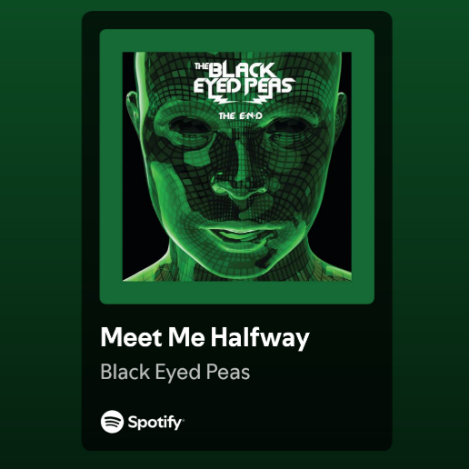
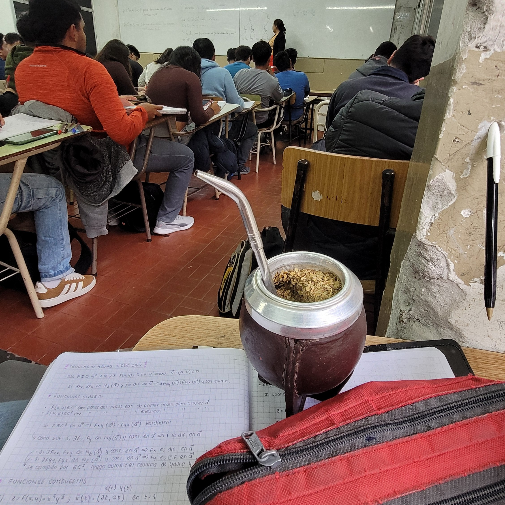

[] días escribiendote.
[] fragmentos escritos.
22/02/2025
Hi darling. Hoy es un dia especial, corro la Maratón de las Luces. Estarás presente en cada metro y segundo que haga. Te extraño.

23/02/2025
AIXA HICE LOS SEIS KILOMETROS EN 30 MINUTOS. I can't believe man. Quedé 5to y Juancho 4to (eran 12 competidores), te prometo que la próxima me esforzaré más. Me ayudaste mucho a terminar la carrera, eran pocos kilometros pero iba a un ritmo que no estaba acostumbrado. Tuve un pico de 190 BPM, pensé que me iba a explotar el cora. Sin embargo, te veía al final en la meta y esa fué mi mayor motivación. Gracias
24/02/2025
Son las 02:10 am, debería estar inscribiendome a todas las materias pero la página de la facultad no funciona. Espero que mañana a la mañana esté disponible. Me dijiste que esta semana te ibas a operar el ojo, sigo pensando en la operación. I miss you. No sabes, estoy por anotarme en el programa de EducationUSA, me hace mucha ilusión. Me gustaría que estés acá para contarte todo.
24/02/2025 11:00 am
No sabes lo que estoy sufriendo con esta plataforma de inscripción, cargo con un estrés; entre las horas de sueño y las peleas con los directivos de la facultad. Ojalá se solucione rapido
25/02/2025
Love is a choice and I choose you

25/02/2025 11:29 pm
No sé cual es el motivo de esto, la verdad es que no se qué espero ni a qué aspiro. Sigo profundamente enamorado de vos, me aceptaste esa carta y no se si fué por pena o porque sentís lo mismo que yo.
26/02/2025
Estoy en otro país, estoy participando en WRO, estoy becado por la universidad. Nada, son sueños que quiero convertirlos realidad, no estoy muy lejos. Hoy fué la primera clase particular para Análisis Matemático II, es compleja la materia, bastante. Ayer me hablaste para contarme sobre la fecha de tu operación.
27/02/2025 10:34 am
I missed you 10 days but I miss you every night. Estoy esperando la respuesta del Concejo Deliberante, la tensión aumenta y la ansiedad me liquida. Tengo que estructurar el proyecto final del curso avanzado de programación, las fechas se acercan.

27/02/2025 23:21 pm
Pienso que deberia agregar fotos a esto, sería lindo. Tengo que estudiar para poder hacerlo.
 Hoy fuí a correr con estas vistas, hermoso no?
Hoy fuí a correr con estas vistas, hermoso no?
28/02/2025 11:17 am
Ya hablé con el CD, no son muy buenas noticias pero voy a seguir intentando; ya pedí cartas de recomendación y me dijeron que no hay ningún problema. Tengo que estructurar el video para EducationUSA y solo me quedaría mandarlo. No te miento, siento mucho miedo; es un futuro muy incierto y eso me altera.
01/03/2025 04:08 pm
Hi darling, I miss u so much today. I wanna call u, I wanna hear ur voice; if you are watching this, what are u waiting for? Call me, please. How have u been? It is everything all right? Im trying to focus on myself, experiencing new stuff. I talked to my programming teacher about our final project! It is like oportunautas, the same page I showed u. It will be a difficult project due to database concepts but I know it will be useful for our society and I wanna help people as you helped me with the Regional Student Competition.
What about my day... I am using a lot the journal, I have to film the video for EducationUSA and I am receiving my recommendation letters for the "Prof. Daniel Cordoba" scholarship. I am so excited, I hope I can get it... I just want to hug you and tell you everything. I miss you so much. I hope you are doing well. I love you.

02/03/2025 10:37 pm
Empecé una serie de terror, "La maldición de Hill House". Ví como 7 capítulos. Tambíen arranqué con el libro Metamorfosis, no me gusta que describa tanto como el tipo se esfuerza para levantarse de la cama.

03/03/2025 07:56 am
Ya organicé mi día, tengo que ponerme las pilas. Ayer Edu me dijo que quiere hacer una sociedad, relacionado con el proyecto que tengo con los chicos. Me imagino muchas cosas pero solo el tiempo me dará respuestas, mientras tengo que seguir enfocándome en la carrera. Espero que empieces la semana con un buen humor :) Que tengas un lindo día, todavía estás a tiempo de llamarme
03/03/2025 05:43 pm
One day I was looking around, walking down the streets... our streets. The moon was not filled but halved, like a medialuna with almibar in a cold winter. I saw you singing and dancing, telling me to join you. You were far, so far away but I recognized your eyes and your little spot right above your upper lip. I would run, walk, swim, drag myself up to you. The moon was not filled but halved, like a coffee without milk in a cold winter. I stretched my hand, I really wanted to dance with you, that really slowed jazz. You were far, so far away but I recognized your exquisite style and your dazzling smile. The moon was not filled but halved, as you, as me, in a cold winter.

04/03/2025 05:48 pm
Que día más extraño, me levanté esta mañana con un "Can we talk?", anteriormente esa misma noche te respondí el estado. "I miss you" but your "I miss you so much" felt so deep. Voy a dejar EducationUSA, voy a seguir tu consejo. No es que no pueda, mi salud y mi bolsillo deben cuidarse. Hablar resulta raro, pero no cambiaste nada, eso me dá tranquilidad. "We might not be the perfect couple and all but I’m always here"
05/03/2025 09:10 pm
Pude vincular el código de la notebook con el de la pc de escritorio, que cómodo poder trabajar desde cualquier computadora. Hoy el clima está hermoso, fresquito y soleado. Tengo que seguir adelantando Análisis II. Me está gustando mucho, me da mucha nostalgia por el primer cuatrimestre. Quiero volver al gimnasio, espero que sea hoy. El café es más rico cuando lo tomo desde tu taza.
06/03/2025 10:53 am
Hi darling, hoy va a ser un dia largo. No tengo la mayor motivacion pero hay que seguir haciendo las cosas. Hoy tuve una pesadilla, me tiene mal el hecho que te vayas y no poder disfrutar este ultimo tiempo que te queda en Salta. Estoy muy enojado con vos, me genera mucha impotencia guardarme todo lo que siento, me genera mucha impotencia querer verte porque literalmente te vas y no me dejes hacerlo, te mentiría si te digo que entendí tus razones porque sigo sin entender nada. Espero que vuelvas pero que vuelvas con todo el amor que merezco, no con migajas. Te amo, cada vez estoy más enojado con vos.
07/03/2025 07:58 am
Another night, another nightmare. I miss you so much. Hoy tengo que enforcarme en Analisis II, tengo bastante por hacer, a las 19 tengo una clase de tres horas. Faltan pocos días para tu operación, espero que todo salga bien y que sobretodo la recuperción sea exitosa. Que tengas un lindo día, Aixa.
08/03/2025 nn:nn nn
Me junté con los chicos, pudimos terminar lo que teníamos que entregar, un pdf y el primer boceto de la página. Laburamos y comimos mucho. Good night, darling.
09/03/2025 09:30 pm
This is so difficult, I am just sad. Hoy salí a andar en bici, lo visité a juancho para ir a tomar mates, necesitaba hablar con alguien. Creo que tengo algo para decirte, pero no sé si es el momento debido a tu operación. I'll wait, as always. Miss u.
10/03/2025 08:30 am
Gooooooood moooooooorning, beautiful day, isn't it? 15 grados, nublado + cafecito. El otoño se acerca y me pone muy feliz. Ahora en un ratito arranco a practicar derivadas parciales, que linda la matemática.
11/03/2025 10:50 pm
Buenas... noches. La verdad es que no entiendo nada. Hoy fué tu operación, tu tía me mantuvo al tanto, todo salió bien por suerte. No sé que espero a este punto, me gustaría saber que pasará en el futuro, solo para hacer esto un poquito más fácil. Te extraño, Aixa.
12/03/2025 09:49 pm
I think it's over but you took that letter, I don't know. Btw hoy fuí al CD, me dijeron que me faltaba el certificado de residencia (claro, alumno regular de la UNSa pero vivo en tucumán). Al menos me hicieron el expediente, tengo que ir de nuevo a zona sur a entregar ese papel. Hoy vino juancho a resolver derivadas parciales, te mentiría si te digo que hay productividad. Siento que debo hacer más trabajo estético en esta página, no me termina de convencer.
12/03/2025 10:09 pm
Hace 5 meses empezaba las lecciones de alemán, me está gustando el francés, al menos lo siento mucho más simple jajaja. Creo que una de mis experiencias favoritas es escucharte hablar en otros idiomas, me encanta.
13/03/2025 nn
Not a good day
14/03/2025 nn
Not a good day
15/03/2025 12:26 am
I was walking down the street (11:30 pm) and I was thinking, how beautiful is Salta, or maybe I was just thinking. I miss you babe, I really miss you. Why are you talking to me? You know I miss you.
16/03/2025 22:07

I want you so bad, it's my only wish
17/03/2025 13:05
Hoy tengo mi primera clase de segundo año, hoy lunes 17 de marzo de 18:00-20:00 tengo clase teórica de Estabilidad I. Tengo muchas ganas de empezar, empieza mi camino solo porque no tengo amigos de Civil, espero poder conocer a algún bochito y hacerme amigo. Veo que estás estudiando mucho, espero que te gustando la materia. A partir de hoy empiezo a estudiar francés de manera más seria, ojalá algún día poder hablar con vos.
18/03/2025
Tuve mi primera clase de AMII, bastante bien, participé un montón. Lamentablemente tengo clases particulares los martes y viernes de 22:00 a 00:00, el cansancio aparecerá en algún momento.
19/03/2025
Just a normal day
20/03/2025
Hoy te ví, no lo puedo creer. Te llevé flores, que linda sensación, no perdimos nuestra química.
21/03/2025 13:05
Día muy pesado, cursando todo el día y estudiando en la biblioteca.
22/03/2025
Estuvimos todo el día juntos, la pasamos muy bien. Me hiciste compañia durante mi clase, escuchamos mucha música y cenamos ravioles en el balcón acompañados de una vela. Tuvimos un momento incómodo pero creo que supimos resolver, al menos estuvo la intención. Me hace feliz verte, no puedo creer que estemos juntos de nuevo.

23/03/2025 9:43
Hoy TIENE que ser un día pesado, tengo que hacer todo lo de la facu sin excusas:)
24/03/2025
Que día más cansador, pero me llamaste al final del día y me relajo la mente. Me contaste que te sentás en el piso de la cocina de tus tíos cuando hablas conmigo, me dió risa imaginarte. Te noto demasiado ocupada, no hablamos durante el día. Pero una llamada es todo lo que necesito.
25/03/2025 14:01
Hermoso día, me levanté a las seis y media y llovía, fuí a cursar y llovía. Me encantan los días así, me generan mucha paz.
26/03/2025 22:41
El proyecto del IITA está tomando forma, estoy aprendiendo a como vincular la base de datos con el programa y vos estas acá. Muy feliz, ily

28/03/2025
Dia super pesado, no hablamos mucho y te extrañé todo el día. La cursada de a poquito se acomoda.
29/03/2025 23:27
Fuí a almorzar con mi familia y terminé tomando un helado de tiramistacho que criticaste mucho. Estoy sumamente orgulloso de vos porque recibiste la Gold Medal de Alpha Scholars, la noticia te llegó en vivo y en directo durante una videollamada nuestra. Además me dijiste que me postule a Tribu24 y así será. Te amo corazón de melón.

30/03/2025
Me contaste que querías cambiarte de carrera, que no sabés realmente que querés estudiar. Pues sinceramente yo tampoco, y por eso te entiendo...
31/03/2025 14:34
Hoy me pusiste 'soñé con vos', me contaste que era parecido al Deutschcamp pero no existía tal fogata. En mi cabeza vibra siempre aquel recuerdo, haciénote mimos en la cabeza en frente de la fogata, cómo me gustaría volver precisamente a ese recuerdo. Estabamos prendidos fuego de tanto amor.
01/04/2025
Esta semana va a ser pesada, rindo 2 veces en la semana. Es hermoso que me acompañes en proceso.

02/04/2025
Me estoy dando cuenta que mi amor por vos crece con el pasar de los días. Me haces sentir tan bien, quiero experimentar tantas cosas con vos. Tengo planeado decirte que te quedes a dormir el finde, espero que te cope la idea. Hoy nos juntamos a estudiar, fué un hermoso día. Además fuímos espectadores de un atardecer increíble.

03/04/2025
Hoy rindo AMII, estoy nervioso.
 Podés creer que un pájaro me cagó los apuntes, increíble. Btw me fué bastante bien en la ET. I miss u baby. Mañana rindo Estabilidad, a esa si le tengo miedo. Me dijiste que si te querías quedar a dormir, con la condición que le pregunte a la proveedora del pan. Así será.
Podés creer que un pájaro me cagó los apuntes, increíble. Btw me fué bastante bien en la ET. I miss u baby. Mañana rindo Estabilidad, a esa si le tengo miedo. Me dijiste que si te querías quedar a dormir, con la condición que le pregunte a la proveedora del pan. Así será.
04/04/2025
Hoy va a ser un día muy especial, primero que nada el profe se olvidó que hoy rendíamos. La clase de probabilidad se hizo muy extensa y estoy muy cansado, pero estoy muy feliz. Tengo que ir a cenar a la casa de tus tíos, quieren estrenar la airfrier (ya veo que ninguno de los 4 sepa usarla). Encima te quedas a dormir en mi casa, un finde perfecto le llamaría. Me encantas.
05/04/2025
Ok. 5 veces en 24 horas. Almorzamos empanadas de queso, tomamos helado y mimoseamos mucho. Lo mejor? Mañana te veo de nuevo, y todo el día practicamente.
06/04/2025
Probablemente uno de los mejores días juntos, ambos la pasamos hermoso. Era el cumpleaños de vicky y terminamos hablando sobre tableros y ITM. Tan amorosos ellos dándose besos con sabor a salsa de apio y ajo, ey pero las empanadas estaban muy ricas. No puedo creer que tengas tanto amor encima. Gracias por todo lo que haces en el día a día, gracias por cuidarme tanto. Coronamos el día con un "coworking", donde vos hacias el working y yo el co-sleeping.
07/04/2025 9:03
Arranca la semana, tantos días juntos y es como si fueras parte de mi rutina diaria. No sé si vos pensás en esto, que te escribo todos los días, hace casi dos meses. En un principio fue un intento de hacerte ver que acá estaba, que iba a estar hace dos meses, hoy y los meses que siguen. Me da miedo el futuro, me da miedo la distancia. Aún así, me dijeron que el amor lo puede todo. Mi amor por vos es gigante, te busqué, te busco y te voy a seguir buscando; estés donde estés. Ante la duda, están estos famosos fragmentos que demuestran que te pienso, que demuestran que te amo. Vendrán nuestras discusiones, vendrán peleas, vendrán diversas emociones. Es importante que nos mantengamos firmes, estoy seguro que así será. Cuando leas esto, quiero que sepas que hoy, 07/04/25 a las 9 de la mañana, te amo con mi alma, que me fuí a dormir y amanecí pensando en vos.
08/04/2025 20:15
Hoy fuí a cursar AMII para terminar almorzando en tu casa, comimos de todo. Eso incluye chorizo con roquefort y chorizo bombón, arroz, papas, cebolla, tarta de zapallitos, paella, tomate. Nos reímos un montón, vos entendiste un poquito de límites y python. En este momento estamos en videollamada y te quejas de que me comí un pedacito de pan cuando elegiste el menú sabiendo que tengo una pequeña intolerancia al gluten. Gracias por todo lo que haces en el día a día, me hacés sentir muy especial y de verdad tengo mucho amor para darte. Queda mucho tiempo para que seas capaz de ver estos pequeños fragmentos, pero es curioso cómo cambian las emociones o, mejor dicho, cómo se fortalecen. Siento que estamos creciento mucho.
09/04/2025
Just a normal day. Te ayudé con python y mi cursada fué bastante regular. Obviamente hablamos por telefono como todos los dias
10/04/2025
Hoy fuímos a ver al físico más importante de la actualidad. Al doctor Juan Martin Maldacena. Ambos coincidimos en que su charla podría haber sido mejor, pero disfrutamos mucho a nuestra manera. Luego viniste a casa y te hice la segunda con el estudio. Estamos cada vez más enamorados.
11/04/2025
Estoy recibiendo tanto amor de tu parte, me siento tan bien a tu lado. Me enamorás con cada palabra, con cada acción y con cada intención.
12/04/2025
Hoy no me fué tan bien en el cuestionario de probabilidad :/ Ambos estamos bastante ocupados pero nuestras llamaditas diarias siempre persisten
13/04/2025
Hoy estoy muy feliz, mañana cumplimos tres meses y decidimos juntarnos para desayunar. Te ayudé en AMI, me comentás que tenés mucho miedo. Yo estoy seguro que lo vas a lograr.
14/04/2025
Hoy oficialmente cumplimos tres meses, suena muy poquito pero se siente de forma totalmente opuesta. Desayunamos un café, tostadas con queso y huevo, y facturitas. Me hiciste una carta que me llenó el corazón. Tambíen tuvimos una discusión que tarde o temprano se iba a dar.
15/04/2025
Es complicado estar sin estar a tu lado, te noto muy cansada por la facultad. El mismo cansancio que siento yo. Ojalá pudiera asegurarte que todo vaya a salir bien, no me gusta verte así y a mi tampoco me da el tiempo para estar las 24 horas disponibles para vos. Recíen estabamos en llamada, noté como me cortaste a propósito. Perdón amor mío, perdón. A mi también me está costando y mucho.
16/04/2025 11:05 pm
Estoy muy cansado, no doy más.
17/04/2025
De nuevo, pasamos horas en videollamada. Me alivias tanto los días corazón mío.
18/04/2025
Viajé a Tartagal, me mandaste una foto tuya mostrando mi primera carta si no recuerdo mal. Particularmente esa tiene mi perfume, tengo pensado renovarla con más perfumito. Sin duda alguna, esa carta refleja mucho amor, te habrás dado cuenta. La escribí en un momento especial, además tiene un dibujo, es tu cara. Lastimosamente mi señora madre se dislocó el hombro, te preocupaste mucho. Te amo
19/04/2025
Viajaste a Buenos Aires para rendir tus primeros parciales, estoy seguro que la vas a romper genia. No solo que lo vas a aprobar, también te vas a sacar excelentes notas. Porque sos vos, Aixa Valentina Zuccon.
20/04/2025
Me hiciste meme ok, ya sé que Delfina Deleon no tiene vacas en su casa, no hacía falta aclararlo ok. Como siempre, te quedaste sin espacio en wpp y empezamos a hablar por mensajes de texto. Como dice el dicho, el que quiere puede.
21/04/2025
Ahora soy parte de oportunautas, lograste convencerme después de un tiempo prolongado, te noto muy contenta. Eso me indica tus ganas de trabajar conmigo y que confías en nuestro potencial. Vamos a lograr muchas cosas juntos.
22/04/2025
We had our first meeting as a team!! Omg! I love u baby.
23/04/2025
Te dije que confíes, esta mañana arrancaste sacándote un 1 en los modelos de parcial de AMI, recién me mandaste una foto donde me mostras que te sacaste un 9. Estoy seguro que la vas a romper mi vida, pero no te lo puedo asegurar yo así que me quedo con las ganas de decirte que te vas a sacar nueves y dieces en estos parciales, PORQUE VOS SOS ASÍ. Estoy orgulloso de todo lo que haces Aixa, todo el esfuerzo será recompensado.
24/04/2025
Me compraro un tensiómetro, esperemos que no tenga presión alta. Me genera tanto amor que me digas que me extrañas, que me pensás. Que lindo saber que es mutuo.
25/04/2025
Mañana defiendo mi proyecto final del curso de Python. Estoy destrozado emocional y físicamente, te extraño un montón, aparentemente tengo fiebre y tengo que defender esto. Encima rendí parcial de Estabilidad, por suerte me fué bien, esperemos que salga con buena nota. Solo quiero verte amor, solo quiero verte. Me preocupa el parcial de Estabilidad del lunes, siento que no se nada y es la realidad.
26/04/2025
Todo salió como tenía que salir, defendí bien y a Pablo le encantó el proyecto. Se te nota feliz en Buenos Aires, me alegra mucho que hayas encontrado tu lugar.
27/04/2025
Casi te quedas sin subte corazón, descubrimos que vos haces las cosas al revés jajajaja
28/04/2025
Ambos rendimos hoy y a la misma hora, estamos cagados hasta las patas. Te pasaron foto del parcial del otro turno y parece que no cambia la estructura.
Update: Te cambiaron la estructura, a mis amigos les rompieron el... Esperemos que nos haya ido bien. Te extraño un montón, te amo.
29/04/2025
Finalmente nos vimos, fuí de sorpresa al aeropuerto y no te lo esperabas. Pasamos un día bello. Encima como es finde largo, me voy a Campo Santo 2 o 3 días (no se cuanto me quedo).

30/04/2025
Me dieron la nota del parcial de Estabilidad, me saqué un 60. Estoy muy contento. Y como no podía terminar mejor, HOY VOY A CAMPO SANTO, mi humor cambia completamente cuando te veo. Es solo un pequeño recordatorio de lo enamorado que estoy de vos. Hace mucho no subo fotos, voy a aprovechar que voy a estar con vos para plasmarlas acá.
01/05/2025
Dormimos juntitos, con mucho amor y mimos (te robé toda la colcha). Hoy comemos locro en lo de la nona y yo tengo MUCHA hambre. Sinceramente te veo y no puedo creer que estés a mi lado. Me emociona estar a tu lado. Siento como que cada día es una aventura nueva.
01/05/2025
Nosotros volviendo de un hermoso día en la casa de la nona, después de enterarnos que tu tía es nazi. Tomé mucho cafecito (ignoremos el hecho que comí media olla de locro)
02/05/2025
Evento canónico de toda pareja, mi suegra me mostró las fotos de mi novia cuando era chiquita. Look at her, my little star. Si supieras que en serio iluminas mis días como si fueras el mismo sol.
02/05/2025
También fuimos a comer locro (otra vez), comí mucho (otra vez). Comimos la mitad de una mandarina al rayo del sol, mimos con alaska y la gordota de la daisy. Para colmo nos enteramos que te sacaste un 9 en el parcial de AMII. Lo tuyo es de no creer, mi genia.
03/05/2025
Día de la despedida, aún así nos divertimos. Gracias por tanto mi vida, haces mis días realmente mejores

04/05/2025
Hoy tuve que grabar el video para el IITA, que cansancio. Lo bueno es que nuestro proyecto va a tener un mayor alcance. Lo lindo? Es que ahora somos 2 vida mía, no hay quien nos pare.
04/05/2025 21:27
Hoy pensé todo el día en nosotros dos, no puedo dejar de pensar en tu carita, tus ojitos, en ese bello lunar que tenes. Te amo Aixa, y quiero que sepas que espero con ansias que veas esta pequeña página. Por más de que sea un pequeño detalle significa mucho para mí.
05/05/2025 23:33
Gracias por absolutamente todo lo que haces. Gracias por ser la mujer que sos, gracias por cuidarme tanto, gracias por ser tan atenta. Gracias por ser lo que todo un hombre desea. Me agregaron a un grupo que se llama Becas Daniel Córdoba, que miedo. Además mañana vamos a la radio. Vos ya te fuiste a dormir, yo probablemente me quede hasta tarde, encima no se sabe si hay paro de colectivo.
06/05/2025 23:33
Hoy fuímos a la radio, me encantó la experiencia. Me siento muy feliz de que estés a mi lado, me haces sentir tan bien. Además fuimos a merendar con Juan y Juancho, luego fuimos a casita, vos editabas un video de la experiencia en la radio y yo estudiando para AMII. Nos subieron al tiktok del IITA y está siendo un éxito. No se entiende de donde salen tantas visitas. We're doing amazing.

07/05/2025
"Sacar belleza de este caos es virtud". Sinceramente, es totalmente lo contrario, "encontrar caos en esta belleza es virtud". Aunque para nosotros es dificil evadir la entropía, queda claro que juntos tendemos al caos de tanto orden, depende qué entendamos como caos. Verte a los ojos genera en mí un vórtice de irregularidades, no resulta común tanta belleza en conjunto, y para mis ojos tanta perfección asusta. Al final, de eso de trata, porque sí, "sacar belleza de este caos es virtud" porque nuestro caos ya es bello en todas sus virtudes.
08/05/2025
"Nada mata a un hombre más rápido que su propia cabeza". Frase que defendes con espada y escudo. Cuando la definición de fortaleza no resulta clara, tu presencia se asoma y demuestra. Porque tu historia lo cuenta, porque tu cabeza lo razona, porque tu persona lo respalda. La forma en la que te admiro, creo que nuestra relación se está volviendo noble.
09/05/2025
"Confiá". Confío en que estamos hechos uno para el otro, no te voy a dejar ir. Porque tantas coincidencias no pueden ser pura casualidad, porque tanto sentimiento no se genera de manera aleatoria. Porque te gustan los aviones y a mi me gustas vos, porque juntos somos. Te mereces la luna, y la medialuna, mi corazón.
10/05/2025
Hoy rendí AMII, espero que me haya ido relativamente bien. Como siempre, vos apoyándome cada minuto en cada circunstancia, gracias por siempre estar. También fuí a merendar con Edu, me fuí contento, es la segunda vez que salimos a merendar, hablamos muchisimo y de muchas cosas. Me gusta contarte esto porque sabés todo lo que significa para mí esa persona.
"Si al hacer algo ya no te dá vergüenza, entonces ya es tarde" Definitivamente cambió tu rumbo, y actualmente está cambiando el mío. No hay nada más lindo que verte lograr tus metas, verte crecer. Este sentimiento se potencia cuando estamos juntos, imaginate que mi admiración era enorme antes de que seamos pareja. Hoy en día sos parte de mi motivación, una gran parte, gracias por demostrarme que tu verdadero color no es el marrón, sino el amarillo. Porque soñas, brillás y volás. Con miedo pero sin vergüenza, con miedo pero con valentía, con o sin nadie. Gracias por enseñarme a soñar en grande/
11/05/2025
Cada videollamada con vos me llena el alma, deseo tanto tenerte cerca. Deseo tanto poder ver ese lunarcito.
"Solía decir quiero morir antes de ser viejo, pero por vos podría pensarlo dos veces". Te hablo en mis sueños y no recibo respuesta, aún así tu presencia me calma. Me siento tan amado a tu lado. Es el amor que tanto quise, me siento tan afortunado de estar con vos. Jamás me hubiera imaginado que íbamos a tener una relación tan bella y tan pura.
12/05/2025
"Para ser primavera hay que aceptar el riesgo de ser invierno". Pasado el invierno, llega la pasión del calor, y vale totalmente la pena. Vale la pena si sos vos, por vos te espero meses y kilometros. Y así será, te lo prometo, amor mío. Esperaré tu amor.
13/05/2025
"Las familias felices son todas iguales" Conocí a tu familia, conocí un poco de tu día a día con ellos. Experimenté situaciones cotidianas a tu lado. Soy fiel creyente de que en un determinado punto la familia se elige como se eligen los pares. Te mereces amor, paz y compromiso. Porque sos buena persona a pesar de cualquier circunstancia. Te amo amor, ya sos parte de mi día a día, y de cada sueño lúcido que tengo.

14/05/2025
"La mejor forma de liberarse de una tentación es cayendo en ella" Ahora sé que tu libro favorito es el Retrato de Dorian Gray - Oscar Wilde. Cumplimos mes, llevamos 4 meses juntos. Me comporté como un pelotudo, y deseo pedirte perdón. Realmente quiero crecer en mi día a día junto a tu lado, quiero que sepas que soy muy feliz a tu lado y que cada minuto que pasamos juntos es un mimo al alma. Te amo Aixa.
15/05/2025 11:08
"Lo que es para vos ni aunque te quites, lo que no es para vos ni aunque te pongas" Hoy nos miramos a los ojos fijamente, te dije que íbas a ser la mamá de mis hijos. Es como si no lo creerías, no podías dejar de sonreir. Dijiste que hoy era tu recuerdo favorito, gracias por tanto amor Aixa. Sos una persona bella, sigo enamorado como el primer día. Te amo hermosa.